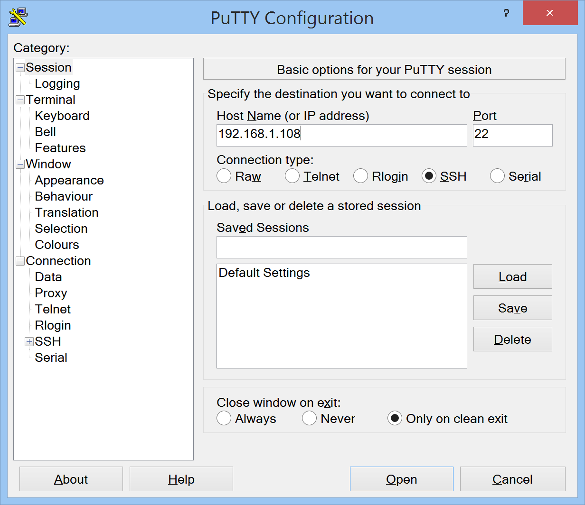

Network Connection¶
In order to communicate with the Pulse Streamer, you need to know its IP. By default the Pulse Streamer will attempt to acquire an IP address via DHCP. If no IP address is received after 20 seconds, it will fallback to a static IP address 192.168.1.100.
assign a static IP with the MAC address and DHCP¶
You can configure your DHCP server or router to assign a static DHCP IP to the Pulse Streamer’s MAC address. In this way you know the IP that the Pulse Streamer will receive by DHCP. You find the MAC address of your Pulse Streamer on the bottom of the device.
To verify your network configuration, open a terminal and enter
[user@host~] arp
Address HWtype HWaddress Flags Mask Iface
192.168.1.108 ether 00:26:32:f0:09:30 C wlp1s0
router ether 18:83:bf:c1:1f:67 C wlp1s0
In this example the first line is the Pulse Streamer and the second line is the router.
use 192.168.1.100 static fallback IP¶
Either connect your Pulse Streamer directly to your computer with an ethernet cable or setup a static 192.168.1.xxx network and connect the Pulse Streamer to this network. Assign a static IP to your computer that is not 192.168.1.100, e.g. 192.168.1.88.
Note that with this configuration, the startup time is delayed by about 20 seconds since the Pulse Streamer searches for a DHCP IP at every startup. This can be improved by setting the default IP configuration to static.
modify the network settings¶
Requirements:
- network access to your Pulse Streamer (e.g. 192.168.1.100 static fallback)
- ssh / putty
verify network access to your Pulse Streamer¶
open a console and enter
ping <pulse_streamer_ip>
where <pulse_streamer_ip> is the IP of your Pulse Streamer. You should see something like
[user@host~] ping 192.168.1.108
PING 192.168.1.108 (192.168.1.108) 56(84) bytes of data.
64 bytes from 192.168.1.108: icmp_seq=1 ttl=64 time=6.74 ms
Login to your Pulse Streamer¶
Windows:
Open putty, enter the IP of your Pulse Streamer and press ‘Open’. If you connect for the first time, a security alert about an unknown host key should pop up. Click ‘Yes’ to store the host key for the future. Enter the username ‘root’ and password ‘root’.
Linux:
Open a terminal and enter
ssh root@<pulse_streamer_ip>
where <pulse_streamer_ip> is the IP of your Pulse Streamer. Enter the password ‘root’.
[user@host~] ssh root@192.168.1.100
root@192.168.1.108's password: root
Edit the IP configuration¶
Open the IP configuration file in the vi editor.
vi /opt/pulsestreamer/etc/network/interfaces
Switch to ‘insert mode’.
i
Change the file according to your needs. For DHCP, these lines should be uncommented
# Dynamic (DHCP) IP address
auto eth0
iface eth0 inet dhcp
udhcpc_opts -t7 -T3
For a static IP configuration, these lines should be uncommented. Modify these lines to your needs.
# static IP address
auto eth0
iface eth0 inet static
address 192.168.1.101
netmask 255.255.255.0
gateway 192.168.1.1
When you are done with your edits, press
<ESC>
to exit ‘insert mode’. To save your changes, type
ZZ
To discard your changes, type
:q!
Reboot your Pulse Streamer.